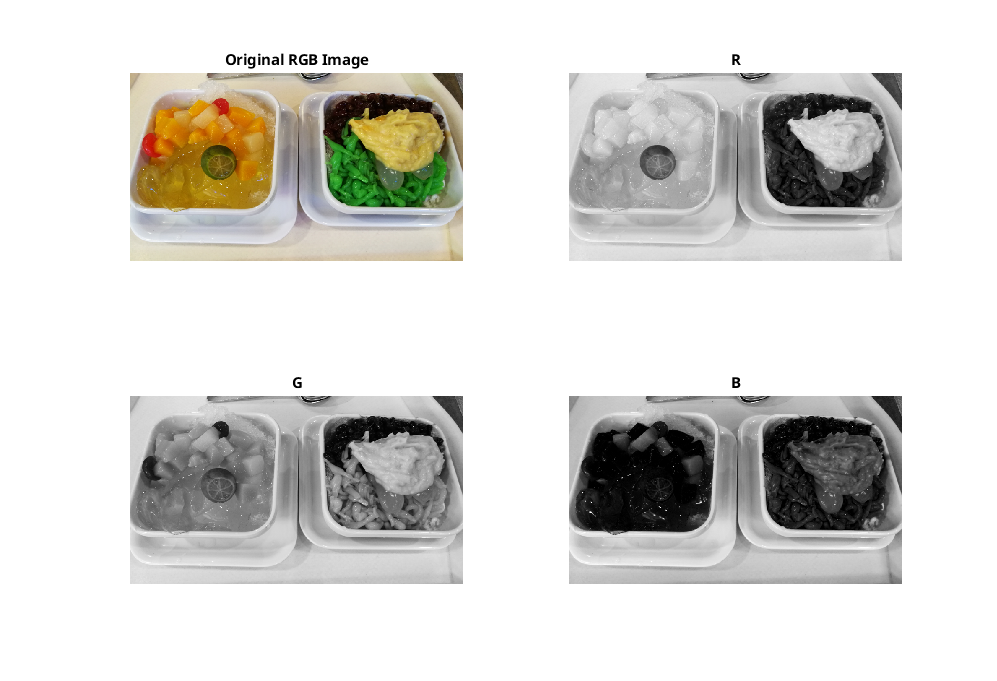
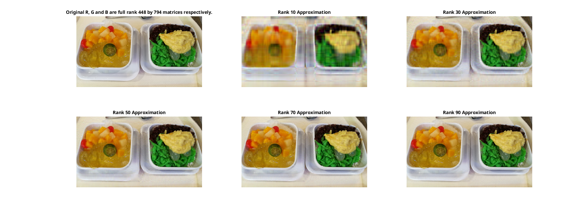
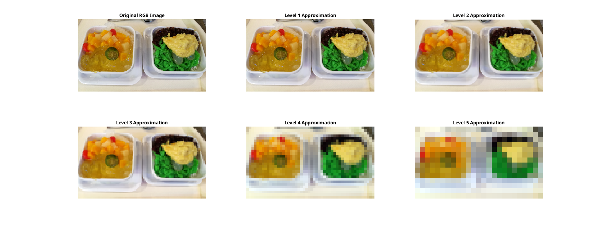

Image processing of RGB images
shaved ice
In this page we split an RGB image into R, G, and B grayscale images, process them and combine them to obtain a new processed RGB image. See
rgb_imsplit_shaved_ice.m
,
and
for the detail.
Reading RGB Image
Splitting RGB into R, G and B

Low rank approximation

Multiresolution Decomposition (the Haar wavelet)
